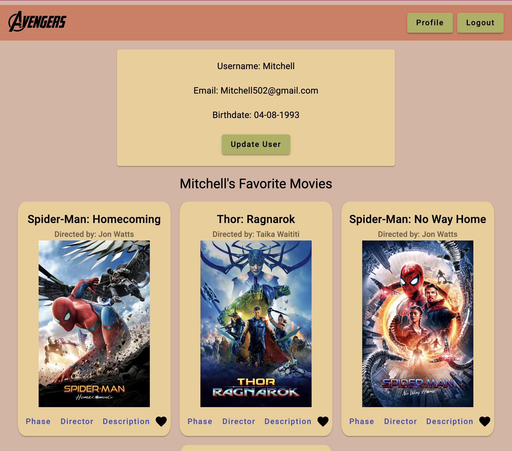
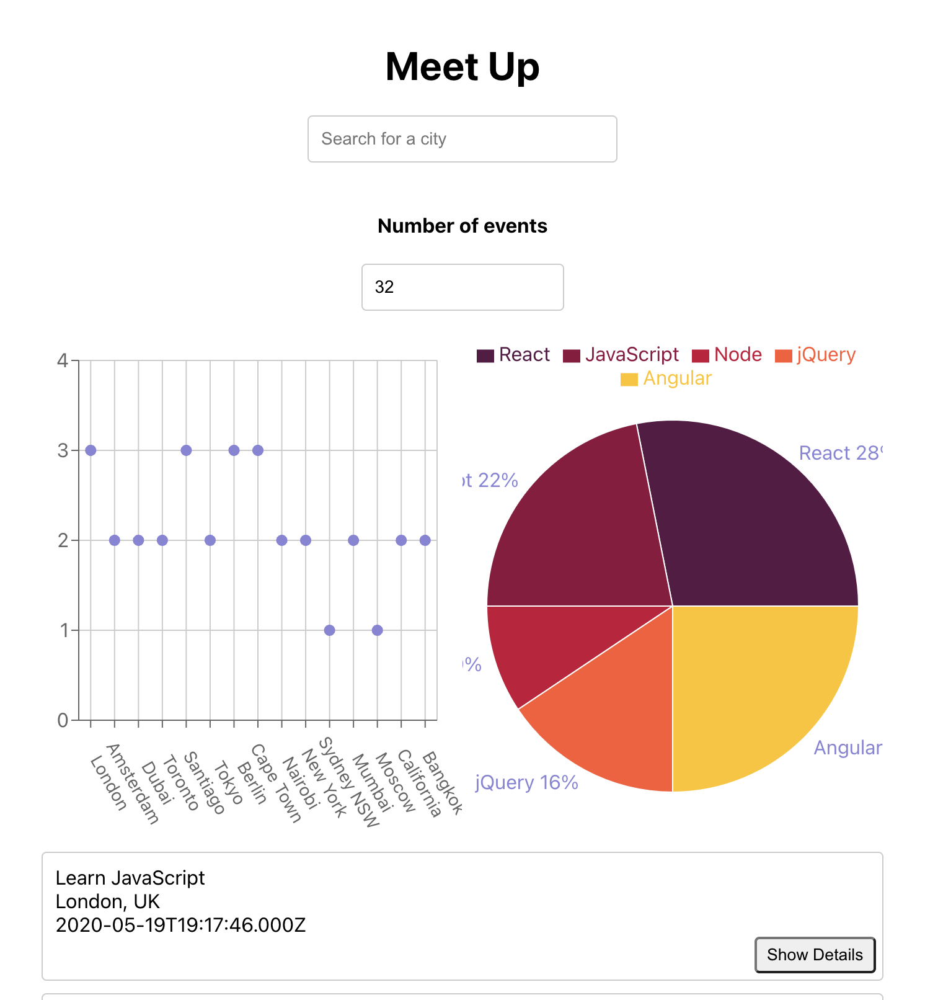
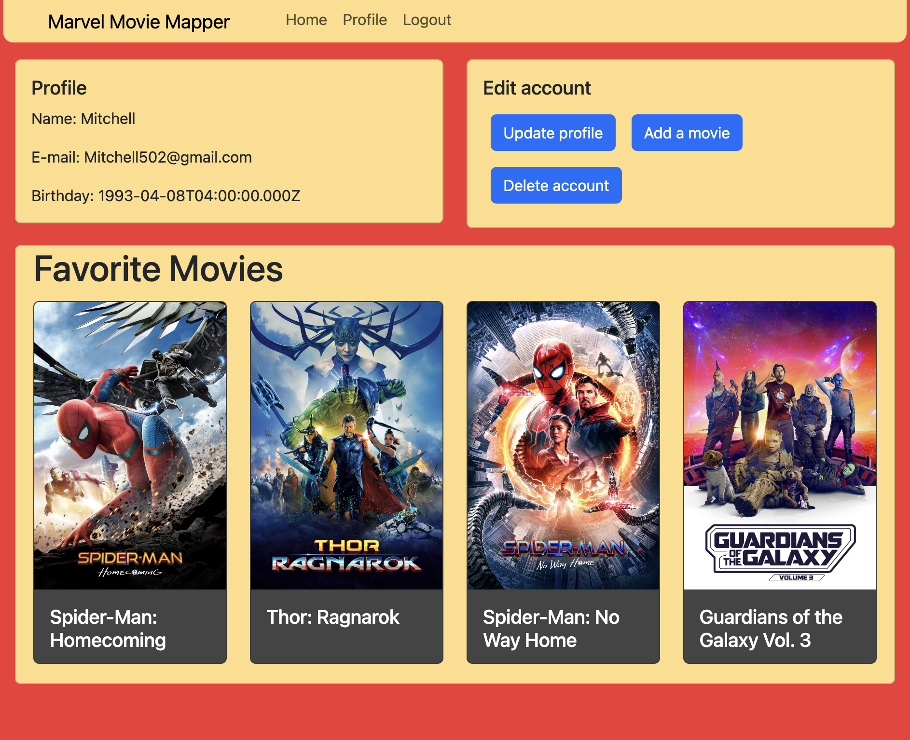
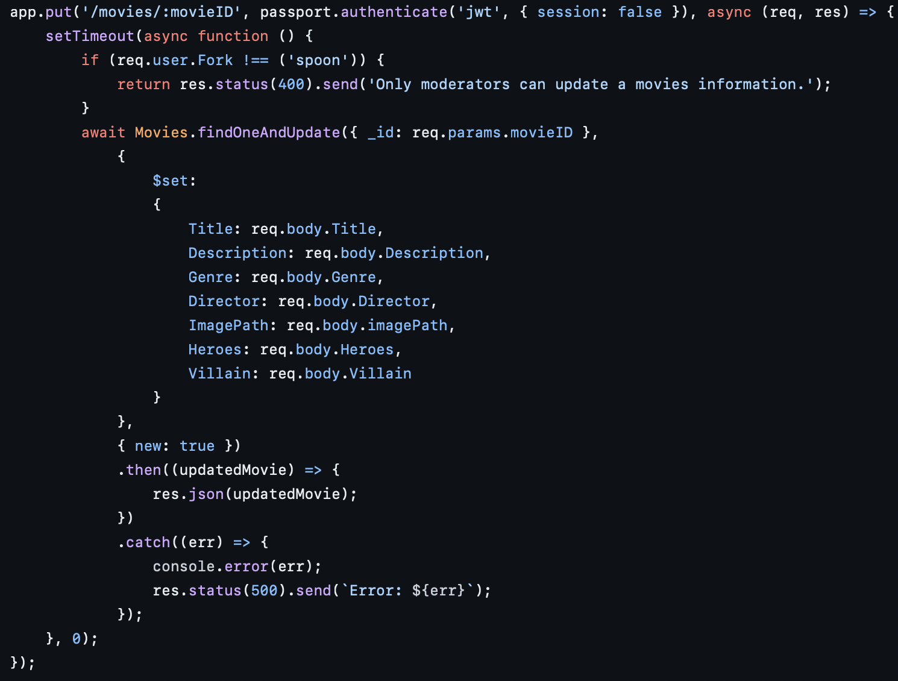
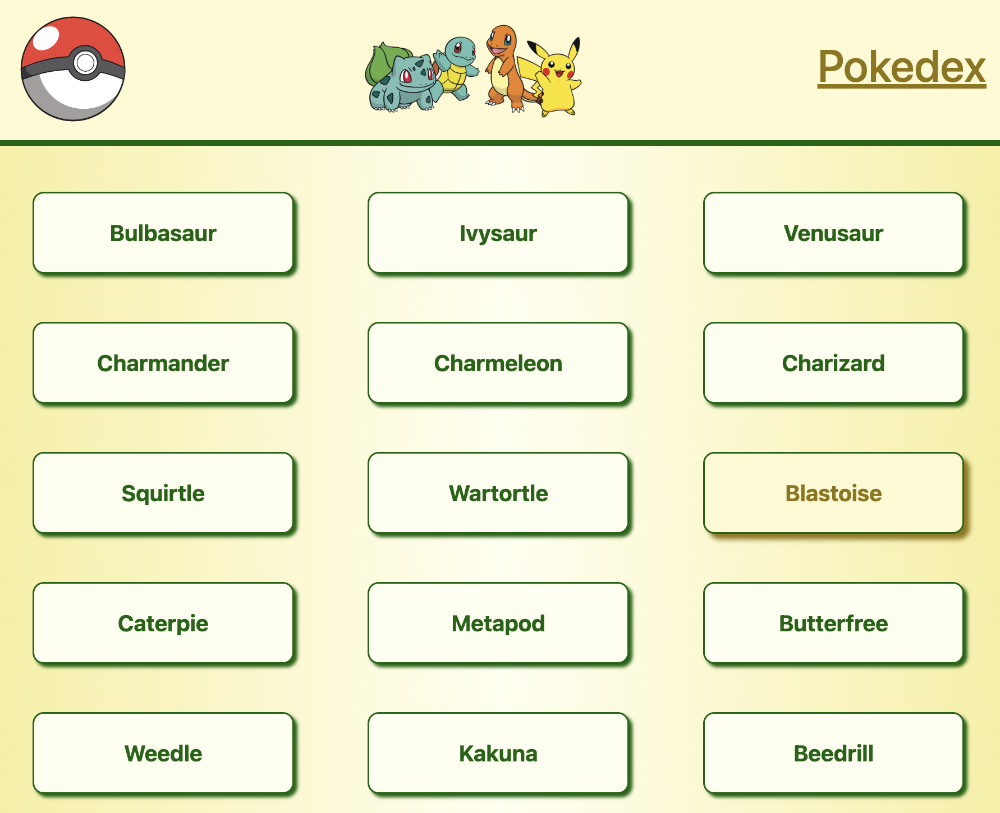
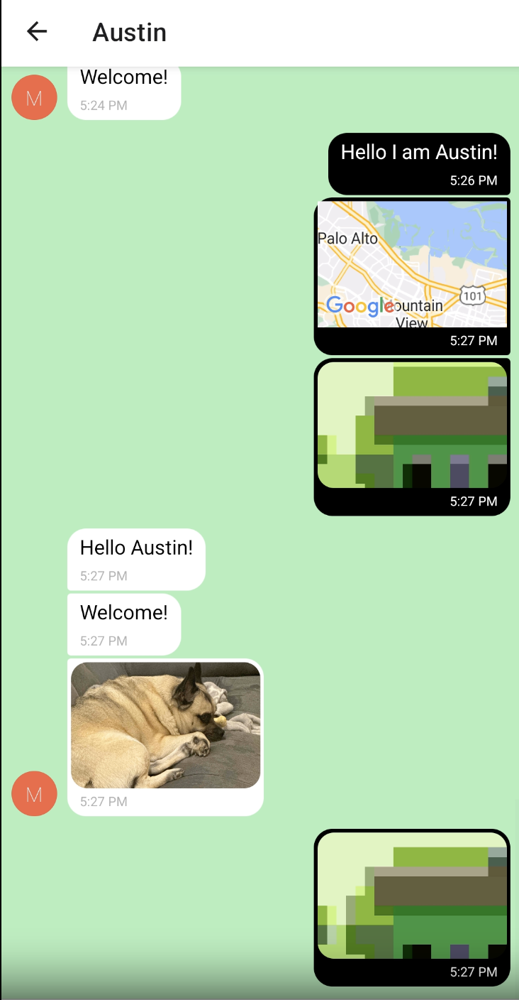

My Work
Angular Movie Application
In this application I used the API that I created for a movies application earlier. I then used Angular to creat a pleasant looking and easy to use movie application. I gave it the features of login, sign up, favorite movies, and edit your profile. This was my first time using the Angular framework and I found it intriguing how it works compared to other frameworks.
Technologies used: Angular, Mongo DB, Express.js, Node.js, and Angular Material.
 View my repository on GitHubVisit the live site
Meet App
The meet app was designed to display a list of events that are available in different cities while also visualizing the data they contain. I was practicing test driven development (TDD), oAuth2, lambda api functions, and data visualization while building in react application to create a PWA.
Technologies used: React, AWS lambda, oAuth2, and google calendar api.
 View my repository on GitHubVisit the live site
Marvel Movie Mapper React App
In this project I put my movie API to use. I created a movie application for users to create and account, login, pick their favorite movies, and edit their account. I also implimented my administrator functions created in the api so that a user with this would have access to adding movies to the database. It this I had to link databases and api's to work together to creat a functioning back end and front end for the app to function properly.
Technologies used: React, Mongo DB, Node.js, Bootstrap, Parcel, and Express.
 View my repository on GitHubVisit the live site
Movie API
This was my first step into creating my own API that I would use on a couple of projects going forward. I used node.JS to be able to create all the endpoints I would need to be able to create a movie application. I took this one step farther and created an andministration level for my users accounts. This allowed the admins to access more features like adding movies and assisting with users accounts. I also stepped into creating extensive documentation for further users to be able to impliment their own use of the API.
Technologies used: React.js, and Postman.
 View my repository on GitHubPokedex
Creating a Pokedex was my first step into coding with JavaScript. During this project I used an API that provided the images and information for my pokemon. I was then able create modals to show the different pokemon and their information. I also created search functionality to help find what you are looking for. This was a great project for me to start thinking with functions and learn more about how to code using them.
Technologies used: React, Bootstrap, Pokemon API, CSS, and HTML
 View my repository on GitHubVisit the live site
Chat App With React Native
In this application I created a native app to run on mobile devices. It is a chat application with ofline recall of messages and live refresh of messages. I used Gifted Chat to help me customize a lot of the look of the application and to help impliment features like image sharing, location sharing, and messaging. This was my first step into developing specifically for phone usage and I think phone development is going to be very important moving forward so I look forward to working on it more.
Technologies used: React Native, Google Firebase Databse, Google Firestore, and Gifted Chat.
 View my repository on GitHub